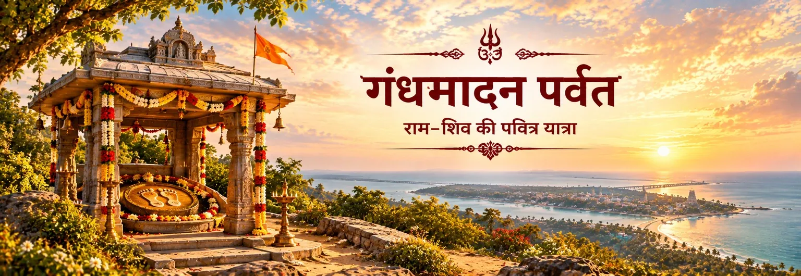

राम के पवित्र चरणचिह्न
सरकारी विरासत-संबंधी सामग्री गंधमादन पर्वतम पर स्थित दो-मंज़िला मंडप का उल्लेख करती है, जहाँ चक्र पर अंकित राम के चरणचिह्नों की पूजा की जाती है।

पवित्र स्थल
गंधमादन पर्वत रामेश्वरम् की पवित्र भूगोल से जुड़ा एक प्रमुख पहाड़ी स्थल है। वर्तमान में राम पदम् के नाम से प्रसिद्ध यहाँ का तीर्थ भगवान राम के चरणचिह्नों की श्रद्धापूर्वक पूजा के लिए जाना जाता है। पर्वत से द्वीप और समुद्र का विस्तृत दृश्य भी दिखाई देता है।
राम–शिव की व्यापक पवित्र यात्रा में इसका महत्व और गहरा हो जाता है। सेतु की परंपरा, रामेश्वर की शिव-उपासना और द्वीप की तीर्थ-भूमि — ये सभी राम की यात्रा की स्मृति को शिव-भक्ति से जोड़ते हैं।
यह स्थल एक जीवित तीर्थ-परंपरा के रूप में समझना सबसे उचित है—जहाँ भू-दृश्य, पवित्र स्मृति और उपासना एक साथ मिलते हैं।
पर्वत-शिखर की पवित्रता
सरकारी विरासत-संबंधी सामग्री गंधमादन पर्वतम पर स्थित दो-मंज़िला मंडप का उल्लेख करती है, जहाँ चक्र पर अंकित राम के चरणचिह्नों की पूजा की जाती है।
तमिलनाडु की पर्यावरण एवं विरासत सामग्री इसे द्वीप के सबसे ऊँचे स्थलों में बताती है, इसलिए यहाँ से रामेश्वरम् का विस्तृत दृश्य दिखाई देता है।
यह पर्वत उस व्यापक तीर्थ-क्षेत्र का हिस्सा है जिसमें रामनाथस्वामी मंदिर, सेतु से जुड़ी परंपराएँ और रामकथा से संबंधित अनेक तीर्थ सम्मिलित हैं।
पर्वत-शिखर तीर्थ-अनुभव को एक अलग दृष्टि देता है—हृदय के निकट स्थित चरणचिह्नों के दर्शन के बाद भक्त पूरे द्वीप की ओर देखते हुए व्यापक पवित्र यात्रा को स्मरण करता है।
शास्त्र और परंपरा
यहाँ सावधानी से पढ़ना आवश्यक है। वाल्मीकि रामायण में गंधमादन नामक एक वानर का उल्लेख मिलता है और अनेक पर्वतों का वर्णन भी है, लेकिन नीचे दिए गए संबंधित प्रसंग वर्तमान रामेश्वरम् के इस पहाड़ी मंदिर को राम के चरणचिह्नों वाले तीर्थ के रूप में पहचान नहीं कराते। रामेश्वरम् के गंधमादन को राम की पवित्र भूगोल से जोड़ने वाली पहचान बाद की तीर्थ और स्थल-परंपराओं में विकसित होती है।
स्कंद पुराण के सेतु-माहात्म्य में राम–शिव संबंध अधिक स्पष्ट रूप से सामने आता है। वहाँ समुद्र पार करने के बाद राम के गंधमादन पर्वत तक पहुँचने और वहाँ शिवलिंग की स्थापना करने का वर्णन मिलता है; वही लिंग रामेश्वर के नाम से प्रसिद्ध होता है। इसी कारण गंधमादन को रामेश्वरम् की शिव-तीर्थ यात्रा से जोड़ने वाली एक महत्वपूर्ण शास्त्रीय परंपरा मिलती है।
पर्वत को समझने के चार भाव
पवित्र चरणचिह्न केवल पत्थर पर बनी आकृति नहीं; भक्त के लिए वह स्थान के माध्यम से दिव्य उपस्थिति को स्मरण करने का माध्यम बन जाता है।
ऊँचाई से मिलने वाला दृश्य प्रतीक रूप में भी समझा जा सकता है—एक पवित्र बिंदु पर ध्यान के बाद भक्त अपनी दृष्टि पूरे तीर्थ-क्षेत्र तक विस्तृत करता है।
सेतु-माहात्म्य की परंपरा राम की यात्रा के भीतर शिव-उपासना को रखती है; इसलिए गंधमादन राम और शिव के भक्तिपूर्ण संबंध पर मनन का स्वाभाविक स्थल बन जाता है।
शास्त्र, मंदिर-स्मृति, स्थानीय आस्था और भू-दृश्य मिलकर किसी तीर्थ का अर्थ बनाते हैं। गंधमादन का अनुभव भी इन सभी परतों के साथ होता है।
एक शांत मनन
गंधमादन पर्वत पर भक्त को सूक्ष्म और विराट का सुंदर मिलन दिखाई देता है। चरणचिह्न दृष्टि को भीतर ले जाते हैं; क्षितिज उसे बाहर की ओर विस्तृत करता है। इन दोनों के बीच राम की यात्रा, सेतु और रामेश्वरम् में शिव-उपासना की स्मृति उपस्थित रहती है।
मनन करें: “मेरा स्मरण भक्ति बने और मेरी भक्ति करुणा में विस्तृत हो।”
अक्सर पूछे जाने वाले प्रश्न
यह रामेश्वरम् का एक पवित्र पहाड़ी स्थल है, जो राम पदम् मंदिर और राम के चरणचिह्नों की श्रद्धा-परंपरा से जुड़ा है। तमिलनाडु की विरासत-सामग्री इसे द्वीप के ऊँचे स्थल के रूप में बताती है।
उद्धृत वाल्मीकि रामायण के प्रसंग वर्तमान रामेश्वरम् मंदिर या इन चरणचिह्नों को पहचान नहीं कराते। चरणचिह्नों वाला यह तीर्थ रामेश्वरम् की जीवित तीर्थ-परंपरा का हिस्सा है।
स्कंद पुराण के सेतु-माहात्म्य में लंका-विजय के बाद राम को गंधमादन पर शिवलिंग स्थापित करने का निर्देश मिलता है; वही लिंग रामेश्वर के नाम से प्रसिद्ध होता है। यह रामेश्वरम् में राम–शिव संबंध की एक महत्वपूर्ण शास्त्रीय परत है।
आवश्यक नहीं। वाल्मीकि रामायण में गंधमादन एक वानर का नाम भी है और अन्य भौगोलिक संदर्भों में पर्वत-नाम के रूप में भी आता है। इसलिए रामेश्वरम् के इस पर्वत की पहचान को उसकी विशिष्ट स्थल-परंपरा और तीर्थ-परंपरा से समझना चाहिए, न कि हर उल्लेख को एक ही भौतिक स्थान मानकर।
यात्रा आगे बढ़ाएँ
गंधमादन पर्वत कोई अलग-थलग कथा नहीं है। यह उस व्यापक पवित्र भूगोल का हिस्सा है जिसमें राम, सेतु, रामेश्वर और द्वीप के तीर्थ एक साथ स्मरण किए जाते हैं। पर्वत-शिखर से यह पूरी तीर्थयात्रा यात्रा, उपासना और स्मरण की एक निरंतर कथा के रूप में दिखाई देती है।